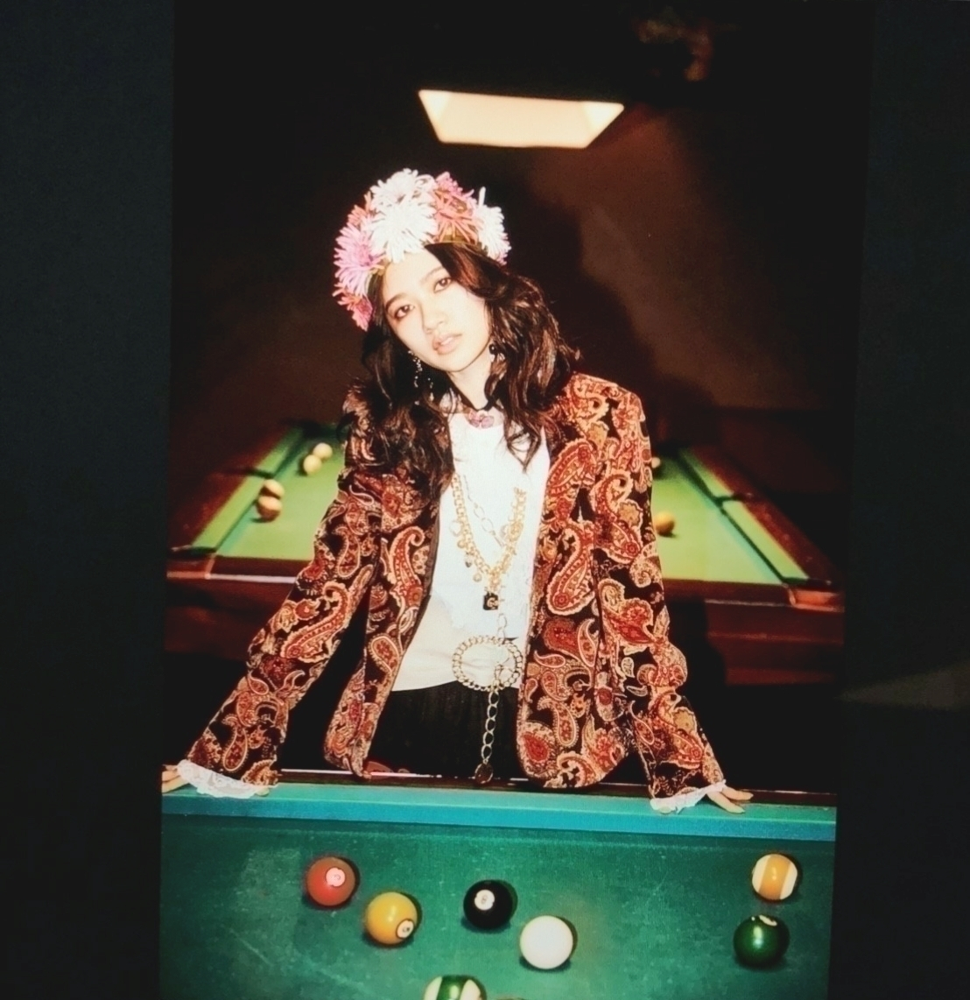
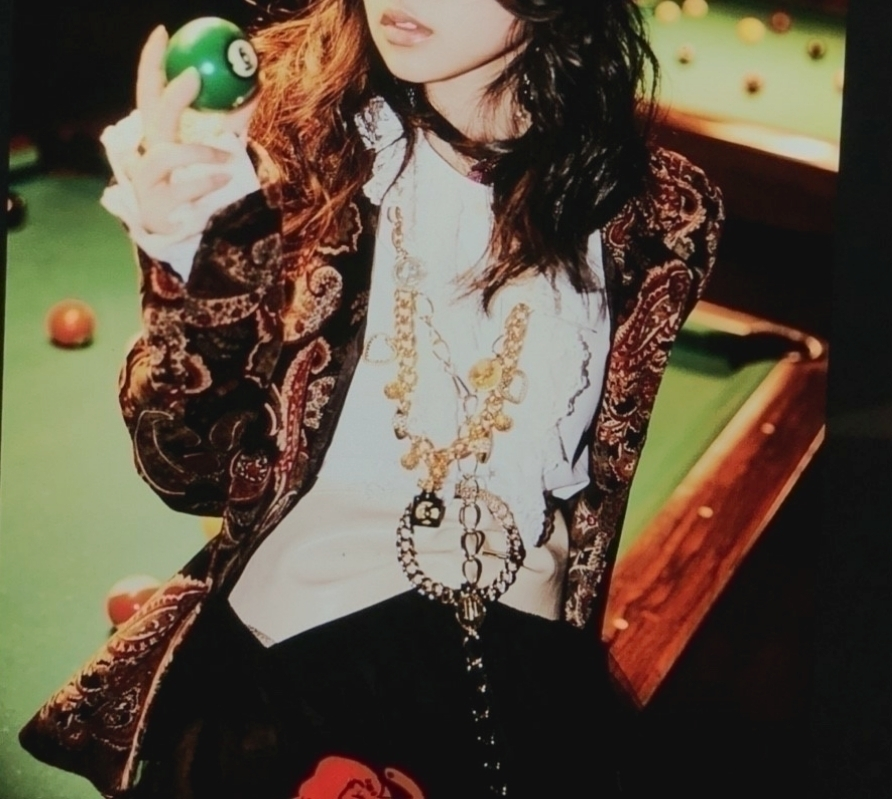

2018/0325Sun色々、お待たせしました(^^)d
ありがとうございます
今、凄く嬉しい気持ちでいっぱいです
そして、いちばんに感謝してます！
ここまで支えてくださった
皆さんに感謝
私が折れて諦めてもこの結果には結びつかなかっただろうし
応援してくれる皆さんが
こんな私に出会ってくれて
全力でいろんな形で
色んな角度から支えてくださったから
今の私があります！
正直、インフルエンサーで選んで頂いたとき
嬉しい気持ちが大きかったけど
心のどこかでまだもやもやした気持ちがありました。
でもあの当時は選抜という環境で新しく学べて
私を１つ大きくしてくれました！！
楽しかったし、もっと乃木坂46を未来に繋げたい
だから頑張りたいって新しいポジティブ思考な目標
感情が芽生えました！
そこから次シングルで
アンダーでの活動をしたとき
凄く今までよりも視野が広がってからもう一度向き合って
大変なことやもどかしい思い
こんなに泣いたことないってくらい
自分でもこんなにも脆い自分居たんだってびっくりするくらい去年の夏は沢山涙を流しました
そんなとき
皆が、みなさんが優しい言葉をかけてくれて
自分のこと嫌いだし
自信もなかったけど
去年の夏で支えられてるって
今まで以上に感じられました
だからこそ、その期待や声援励ましの声にまた答えたいって
これが私の活力になってました。
そのとき
ずっともやもやしていた
大きな心の壁を越えられた気がしました！
きっとより私の心を
強く大きくしてくれた夏でした
去年の出来事は全て
私を気持ちの面で大きくしてくれたのは間違いないです。
2期生として
色んな大きな壁を
のぼったり
壊す勢いで立ち向かったり
違う角度からみたりしてからの
選抜はとても嬉しいもので
私が目指していた道はこれだって
今、直感的に思えました(^^)
ぶっきらぼうですし
あまのじゃくなのに真っ直ぐなので
この文章で伝わっているか
いつもブログだってドキドキしながら綴っている小心者ですが
なによりまず、全ての人に感謝してます！！
大好きな乃木坂が何年も愛されるグループで私はいて欲しいと思ってます
だから、私もここでもう少し頑張りたいですし
寺田蘭世として産まれて
色んな奇跡的な運命で乃木坂46に出会えたからこそ
ここで私ができることをやって
1人でも多くの人が
笑顔だったり
ぐっと心に響くもの
嬉しいも
苦しいも
楽しいも
悲しいも
色んな感情を分かち合いたいです！
生駒さん最後のシングルです
まひろさんとのお別れも近づいています。
やっぱり寂しいけど
皆の明るい未来に向かって
今年１枚目のシングル、そして20枚目という節目
乃木坂46として
これからの人生の大きな１歩として
いいきっかけとなりますように！
メンバー全員と
応援してくださるすべての皆様と
一緒に盛り上げていきましょう(^-^)v
最近は握手会が沢山ありますが
やっぱり皆さんからのおめでとうとか選抜復帰嬉しい
復帰の単語になんか
しんみりしてみたり
語らなくとも向けられるあたたかな目はどんなものにもかえがたい
自然と私も笑顔になれる言葉です！
何よりも嬉しいです(^^)
心より
ありがとうございます！！
ちなみに、選抜発表後のブログ
悩みに悩み
下書きがとんでもない量になりました
先週のニュースがとまらんぜ
日刊スポーツさんのWebでコラムを連載しているのですが
そこでも書いています(*_*)
そちらも合わせて読んでもらえると嬉しいです

乃木坂46時間TV
ぜひ、起きててね！

これ、一昨日にあげる予定でした
遅くなりました
妥協が１番アカンなと思って(*_*)
乃木坂46時間TVについても
また、ブログ上げます！
2018/03/25 22:06


コメント(867)
生放送お疲れ座でした！
これからもコメント頑張ります
応援してるよ〜
ゆっくり休んでね
ありがとう！！
すきだよ！！！
46時間TVお疲れ様！
ゆっくり休んでねー
握手会お疲れ様でした！
46時間TVずっと見てたよ！
私服チェックも最高でした！
早く会いたいよ〜笑
そして、選抜ほんとにおめでとうね！
テレビとかで見れるのがほんとに嬉しいよ！！
46時間TVもお疲れさーん
体調にはほんとに気をつけてなーー
今日は早めに寝ましょうーー笑
46時間TVで沢山見れてしあわせでした！
握手会もお疲れ！！
あなたの電視台が1番面白かったですよw
ブログ更新ありがとう〜！46時間TVとアルバム個別握手会お疲れ様！
久しぶりの握手会、いろんなこと話せて楽しかったよ！選抜復帰もおめでとう！
次会える握手会は少し先になるから辛いけど頑張るね
おめでとうしか言えんよ。
絶対握手しような!!
本日京都で勇姿を見させていただき
去年とはやはり違う、ましてや先月目に入れさせていただいたときよりも素晴らしいパフォーマンスで大感動でした。また、様々な場面で様々な方々を勇気づけて下さい！
握手会や46時間TVお疲れ様でした
そして20th選抜入りおめでとう＼(^o^)／
20th頑張って
これからも頑張って(/･ω･)/
46時間TVお疲れ様でした！蘭世の乃木坂電視台最高でした！！
私服のセンス良すぎ！
ゆっくり休んでください！ ♂️
最近蘭世の画像見るたびに好きになりそうで怖いです
今度握手会行くんでお願いします
今日の生写真もコンプしました！
らんぜにはらんぜの進み方があるよ、それを俺は精一杯応援していけたらなって思う！
だから自信を持って！
今日はおつかれさま！
今回も46時間楽しませて貰ったし充実した2日間になったよ
本当にありがとう！
46時間お疲れ様でした、個人TVの生着替え事故だったね。
忙しいのにブログ更新ありがとう
改めて選抜寺田蘭世。がんばってね！！！
らんぜの可愛い姿が観れて癒されました‼️(ゝω・´★)
きぃちゃんが出てきたのは驚きました‼️(@￣□￣@;)！！
お疲れ様でした‼️(ゝω・´★)
46時間お疲れ様でした！
見ててとても楽しかったです
電視台もじゃーんもめっちゃ可愛かったよ
タオルも買いました！！！！
また握手会とかで会えるの楽しみにしてるね！
では。
選抜発表からニヤニヤ止まらんぜ、幸せとまらんぜなひろみちゃんです。
あのさ、ほんとにほんとに選抜入りおめでとう！！！！
蘭世のゴールはもちろん「選抜に入ること」じゃないのは分かってるけど、『今年こそ』と言ってたことを少しずつ、でも着実に形にしてく蘭世が大好きです。
一生分の「よっしゃぁ！！！」を言ったと思う。
体の中にある「よっしゃぁ！！！」を定期的に放出しないと爆発しそうなこの現象に病名つけて。笑
兎にも角にも選抜入りおめでとう！！！
まだまだここも通過点だよね。それでもひとつひとつお祝いしていこう。
蘭世にとっても、乃木坂にとっても最高のシングルにしていこう。いちファンとしてはそれが何よりだからね。
本当におめでとう。やっぱり蘭世が一番だ。
46TVとかの感想はまた後で！
じゃまた会場で、ちゃっすぅ。
まずは選抜おめでとう！！
今回はモバメでも言ってたとおり素直に嬉しいって気持ちでよかった！！
18.19をアンダーで活動したから悩みもあったと思うけどその分自信もついたんじゃないかな！！
46時間テレビお疲れ様！！蘭世の電視台もひょっこり蘭世もさゆりんご軍団も最高だった！！今日は握手会お疲れ様！！
見てねーって終わってるやん！笑まぁ蘭世らしいな笑
とにかくお疲れ様！！選抜おめでとう！！
そして選抜復帰おめでとう!!!!
名前が呼ばれた時は鳥肌が立つくらい嬉しかったよ！
来週の全握で改めて言わせてもらうね^^*
46時間TV見てたよー！
新しい軍団の会場いるのに見れんかった笑
これからも応援してくね!!!!
ほんとに自分も心の底から嬉しいです！！
大好きです！！
素敵なシングルにしてね(^-^)V
選抜復帰ほんとにおめでとうございます
応援してますー！
ブログ更新ありがとう
そして20thシングル選抜おめでとう！
あと46時間TVお疲れ様！
しっかり休んでね！
『蘭世のことを一番 愛してる！』
46時間TVに握手会に大忙しだったと思うから早めに寝て回復してね！！お疲れ様！！！
正直、蘭世ちゃんがこうやって熱い人間じゃなかったら好きにならなかったかもしれません。 それくらい寺田蘭世の中身が大好きです。 ずっと応援してますよ
堂々と胸を張って頑張ってください！
今年のスターを最高のものにできるようにファンである僕達も応援しています去年の活動は何一つ失敗はなかった
全て今に繋がっています
2期生としての寺田蘭世、乃木坂46の寺田蘭世
今こそ壁をぶち壊す時です！
別れの季節
節目のシングル
最高のシングルに
蘭世はよく頑張ってると思う。
なんか、応援したくなります！
46時間TVまあ疲れ様でした！
電視台の服めっちゃ可愛かったです
蘭世のファッションとっても好きです！
これからも色々写真とか、あげてくれたら嬉しいです
これからも、
応援するよ！！！
今日口でちゃんと選抜おめでとうって伝えれて嬉しかったよ！蘭世の笑顔も見れて嬉しかった！
その頑張りが報われたから今があるんだと思うよ！！
本当に蘭世は尊敬できるし憧れの存在だよ！！
こういう熱いブログも大好きだよ！！
これからも辛いこと、楽しいこと沢山あるけど、一緒に坂登っていこうね！
どこまでも応援するから、蘭世は自分のしたいように自分の道を歩いてね！
そして20枚目大切な１曲になるようにしてください！
そして握手会お疲れ様でした！
これからも頑張って！
46時間TVお疲れ様ー！おもしろかったよ！
そして、選抜復帰おめでとう
3.30と4.31行くから待っててね！！
がんばれっ！
コメントする